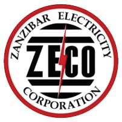
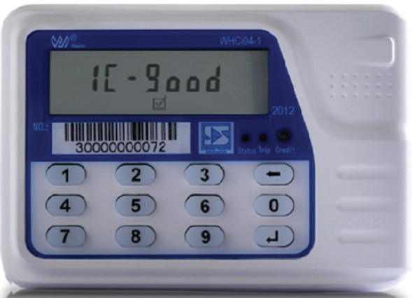

Analyse the case study below and use it to answer the questions that follow:

The Tanzania Electric Supply Company (TANESCO) for Tanzania Mainland and Zanzibar Electricity Corporation (ZECO) for Zanzibar, are the leading providers of electricity in the country. The companies realised that some households and small business customers defaulted on their electricity payments.
As a solution, TANESCO and ZECO decided to introduce new programs referred to as ‘Lipa Umeme Kadri Unavyotumia’ (LUKU) and Tumia Umeme Kwa Uangalifu Zanzibar (TUKUZA) which allowed customers to purchase electricity accordingly as needed and eased the buying of electricity tokens through mobile money and from various vendors in their communities.

TANESCO and ZECO management reported that at first it was complicated for the customers to use the system, but later on with upgrades it became very efficient.
Entrepreneurial skills
Entrepreneurial skills are abilities that an individual needs to possess so as to identify and pursue different opportunities in the market. Thus, to become a successful entrepreneur, one needs to develop several types of skills. The following are the skills